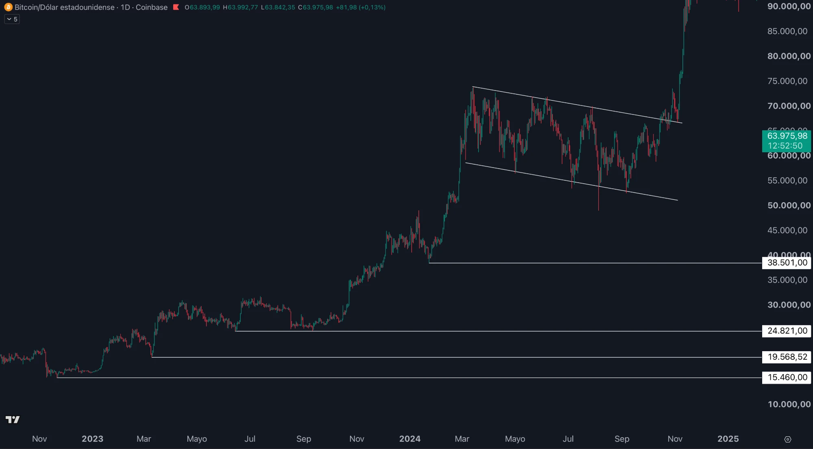

Estructura de mercado: leer hacia dónde va el precio
Lo que sabrás hacer al terminar
- Identificar máximos y mínimos relevantes en un gráfico.
- Distinguir una tendencia alcista, una bajista y un rango lateral.
- Reconocer cuándo una tendencia se rompe (cambio de estructura).
- Marcar la estructura sin saturar el gráfico de líneas.
El precio no se mueve en línea recta: avanza en zigzag, dejando picos y valles a su paso. La estructura de mercado es, sencillamente, leer esos picos y valles para saber si el precio va arriba, abajo o de lado.
No es magia ni un indicador raro: es la forma más honesta de entender el contexto. Antes de operar nada, lo primero es saber en qué dirección empuja el mercado. Eso es lo que verás aquí.
Máximos y mínimos: la materia prima
Si miras cualquier gráfico, el precio sube y baja formando montañas. Cada cima es un máximo (en inglés, high) y cada valle es un mínimo (low). Esos picos y valles son los ladrillos con los que se construye toda la estructura.
- Máximo: un punto donde el precio dejó de subir y giró hacia abajo.
- Mínimo: un punto donde el precio dejó de bajar y giró hacia arriba.
No hablamos de cada minúscula subidita: nos interesan los giros relevantes, los que se ven claros aunque te alejes del gráfico. Esos son los que cuentan la historia.
El precio va en zigzag. Las cimas son máximos, los valles son mínimos. Toda la estructura de mercado se construye comparando esos máximos y mínimos entre sí.
Las tres situaciones: alcista, bajista y rango
Comparando cómo se van colocando los máximos y los mínimos, solo hay tres escenarios posibles:
- Tendencia alcista: cada máximo es más alto que el anterior y cada mínimo también es más alto. El precio dibuja una escalera que sube. Mandan los compradores.
- Tendencia bajista: cada máximo es más bajo que el anterior y cada mínimo también es más bajo. La escalera baja. Mandan los vendedores.
- Rango (lateral): los máximos y los mínimos se quedan más o menos a la misma altura. El precio rebota dentro de una caja, sin dirección clara. Hay empate.
Máximos y mínimos subiendo: alcista.
Máximos y mínimos bajando: bajista.
Planos, rebotando en una caja: rango.
Con saber en cuál de las tres está el precio ya tienes el contexto.
Cambios de estructura: cuándo se rompe una tendencia
Una tendencia sigue viva mientras se respeta el patrón. La alcista se mantiene mientras cada máximo y cada mínimo sea más alto que el anterior. ¿Y cuándo se rompe? Cuando ese patrón deja de cumplirse.
- Se rompe una alcista cuando el precio hace un mínimo más bajo que el mínimo anterior. La escalera deja de subir: aviso de que la tendencia podría haber terminado.
- Se rompe una bajista cuando el precio hace un máximo más alto que el máximo anterior. La escalera deja de bajar.
A esto se le llama cambio de estructura: el momento en que el mercado deja de hacer máximos y mínimos crecientes (o decrecientes) y empieza a comportarse al revés. No es una garantía de giro, pero sí la primera pista seria de que el viento está cambiando.
Cómo marcarla en el gráfico
El error de principiante es llenar el gráfico de rayas hasta que no se ve nada. La estructura se marca al revés: menos es más.
- Marca solo los giros relevantes, no cada vela. Un máximo o mínimo cuenta si se nota claramente al alejarte del gráfico.
- Únelos mentalmente: ¿los máximos van subiendo o bajando? ¿Y los mínimos? Eso te da la tendencia en cinco segundos.
- Si dudas de si un pico es relevante, probablemente no lo sea. Los que importan saltan a la vista.
Un truco honesto: aléjate del gráfico (reduce el zoom). Si tienes que forzar la vista para ver un máximo, ese máximo no manda en la estructura.
Y un caso real de libro: el rally de Bitcoin. Fíjate en la secuencia — una tendencia alcista potente, una lateralización (el canal marcado: meses moviéndose de lado sin decidirse) y luego la continuación al alza. En diario, con años de historia, la estructura se lee de un vistazo.

Por qué la estructura manda
Hay un dicho viejo y cierto: "la tendencia es tu amiga". Operar a favor de la estructura es ir en la dirección en la que el mercado ya está empujando, en lugar de pelearte con él.
La estructura es el contexto sobre el que se apoya todo lo demás de este módulo: los soportes y resistencias, los marcos temporales, el volumen… nada de eso significa gran cosa si antes no sabes si el precio va arriba, abajo o de lado.
| Estructura | Qué hace el precio | A favor sería… |
|---|---|---|
| Alcista | Máximos y mínimos más altos | Buscar el lado comprador |
| Bajista | Máximos y mínimos más bajos | Buscar el lado vendedor |
| Rango | Va de lado entre techo y suelo | Esperar o jugar los extremos con cautela |
Primero la estructura, luego todo lo demás. Operar contra la tendencia es nadar a contracorriente: a veces sale, pero casi siempre cuesta el doble. Sin estructura no hay contexto, y sin contexto solo estás adivinando.
- "Marco cada subidita y bajadita." Saturar el gráfico de puntos hace imposible leer la estructura. Solo cuentan los giros relevantes.
- "Un solo mínimo más bajo y ya está todo perdido." Un cambio de estructura es un aviso de cambio de contexto, no una señal de entrada ni una garantía de giro.
- "Compro porque tiene que rebotar." Operar contra la estructura (comprar en plena bajista esperando el giro) es el error más caro y más frecuente del principiante.
- El precio se mueve en zigzag, dejando máximos (cimas) y mínimos (valles).
- Alcista: máximos y mínimos cada vez más altos. Bajista: cada vez más bajos. Rango: a la misma altura.
- Un cambio de estructura ocurre cuando el patrón se rompe: aviso de que la tendencia podría haber terminado.
- Marca solo los giros relevantes: menos líneas, más claridad.
- Opera a favor de la estructura: es el contexto sobre el que se apoya todo lo demás.
- Abre un gráfico diario de cualquier activo (en tu bróker o en TradingView) y aléjate (reduce el zoom). ¿Los máximos y mínimos suben, bajan o van de lado? Decide si está en alcista, bajista o rango.
- Marca con tu dedo (o un par de puntos) los tres últimos máximos y los tres últimos mínimos relevantes. Solo esos.
- Busca un punto del pasado donde una tendencia se rompió: ¿ves el primer mínimo más bajo (si era alcista) o el primer máximo más alto (si era bajista)? Ese fue el cambio de estructura.
Estructura de mercado: la forma en que se colocan los máximos y mínimos del precio, que revela si va arriba, abajo o de lado.
Máximo (high): un pico donde el precio dejó de subir y giró hacia abajo.
Mínimo (low): un valle donde el precio dejó de bajar y giró hacia arriba.
Tendencia alcista: secuencia de máximos y mínimos cada vez más altos.
Tendencia bajista: secuencia de máximos y mínimos cada vez más bajos.
Rango (lateral): el precio se mueve de lado entre un techo y un suelo, sin dirección clara.
Cambio de estructura: momento en que la secuencia de máximos/mínimos se rompe; aviso de que la tendencia podría haber terminado.